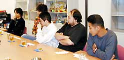

|
 最初に企画者の田尻智さんにポケモンのアイデアを聞かされたときはどんな印象を持ちましたか？ 最初に企画者の田尻智さんにポケモンのアイデアを聞かされたときはどんな印象を持ちましたか？
 杉森>> ポケモンはゲームボーイというハードから思いついたアイデアです。それまでずっと対戦に使われていたゲームボーイのケーブルを、なにかを交換することに使ったらおもしろいんじゃないかと田尻が言い出しまして。昔、メンコやカードをお互いに交換しあったようなもんだと説明されて、イメージはすぐにわいたんですが、それをどうゲーム化していくかというのは、最初のころはまだぼんやりしていましたね。 杉森>> ポケモンはゲームボーイというハードから思いついたアイデアです。それまでずっと対戦に使われていたゲームボーイのケーブルを、なにかを交換することに使ったらおもしろいんじゃないかと田尻が言い出しまして。昔、メンコやカードをお互いに交換しあったようなもんだと説明されて、イメージはすぐにわいたんですが、それをどうゲーム化していくかというのは、最初のころはまだぼんやりしていましたね。
とりかえるためには「欲しい」と思わせるものがないといけないですよね。それが、「魅力的なキャラクターを作る」という作業につながったんだと思いますが。
杉森>> そうですね。キャラクターはスタッフ10人くらいで一生懸命考えました。プログラマ、グラフィック、企画と、役割分担はあるのですが、わりとみんな自分の分野以外にも口を出したがる。全員がアイデアを出し合って作ったゲームなんです。

ポケモンを151匹と設定したのはなぜですか？
杉森>> 最初はもっとＲＰＧ的なゲームだったんです。途中から図鑑の完成をめざす、というようにゲームの目的が変わったんですよ。それで、ゲームにちょうどよいキャラクター数というのと、あとは容量の問題です。本当はもっとたくさん入れたかったんですよ。デザインしたポケモンの数は採用されたものの１．５倍くらいありますね。
普通のＲＰＧから、図鑑の完成を目的とするゲームに変わったのはなぜですか？
杉森>> 図鑑のテキストを書いているうちに、ポケモンを集めるのがおもしろいんじゃないかという話になったんですね。もともと、ファンタジー的なＲＰＧにはしたくなかったんです。大魔王と戦う勇者の物語よりも、図鑑の完成をめざして旅立つ少年の物語のほうが、現代のストーリーとしてはふさわしいんじゃないかということになったんです。
普通のＲＰＧでは主人公が成長していきますよね？ でも、ポケモンは一緒に旅をしているポケモンが育っていきます。それはなぜですか？
杉森>> 一時、主人公が補足的に戦っているときもあったんですよ。でも、自分が戦えると「ポケモンってなんなの？」ということになりますよね。
増田>> 最初のころはポケモンと主人公が人（ひと）とペットの関係だったんです。でも、作っていくうちに、ポケモンが仲間とか友達のような存在になったほうがいいんじゃないかということになった。それで、一緒に成長していくストーリーに変わったんです。
増田>> 仲間ということで、それぞれのユーザーがポケモンの個性を育てられるようにしたんです。わざを４つしか覚えられないのは、そのためなんですよ。どのわざを選ぶかで、持っている人の個性が出てきますよね。ポケモンは自分のもので、自分の友達であるという気持ちがもてるように工夫してあるんです。
ポケモンに名前がつけられるのも工夫のひとつですか？
増田>> そうですね。名前をつけるアイデアは最初からありました。
杉森>> 「セーブデータを３つ作れるのと、ポケモン151匹に名前がつけられるのはどっちがいい？」という議論になったとき、全員一致で「ポケモン全部に名前がつけられるほうがいい！」と。
ポケモンに愛着を持ってもらうことのほうが大事だということですね。
増田>> そうです。ユーザーによって持っているポケモンの個性が違うということが、交換の条件でもありますよね。
|
|
|